結構動力分析與耐震設計 · SD-U1-2 · 影片講義
運動方程式推導
影片 14:00 · 14 章 · 28 段 · 四題例題
難的不是「解方程式」，是 「把方程式正確寫出來」。
建模寫錯 → 算得再漂亮都是零分
第 0 章底層邏輯 一句話
這個單元只解決一件事：題目給你一個結構，怎麼把運動方程式正確寫出來。考場上真正失分的從來不是解方程式，而是建模。方程式寫錯，算得再漂亮都是零分。
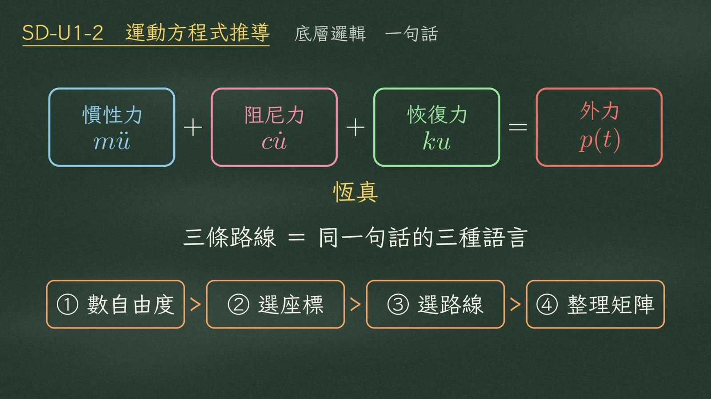
四色框：慣性力＋阻尼力＋恢復力＝外力「恆真」；下方四步驟 SOP影片 0:43
底層物理只有一句話：慣性力，加阻尼力，加恢復力，等於外力，這句話恆真。
$$\color{#2f78ad}{m\ddot u}+\color{#b8457f}{c\dot u}+\color{#2e8b57}{ku}=\color{#c0392b}{p(t)}$$
黑板配色：藍＝慣性力、粉紅＝阻尼力、綠＝恢復力、紅＝外力。
接下來的三條路線，只是把同一句話寫下來的三種語言。順序是四步驟：
四步驟① 數自由度 → ② 選座標 → ③ 選路線 → ④ 整理成矩陣
第 1 章步驟一 數自由度
先問自己：最少需要幾個獨立的數字，才能描述整個變形形狀？
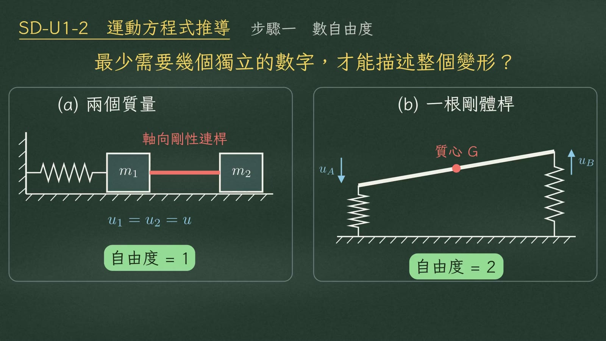
(a) 兩質量以軸向剛性連桿相接 → DOF＝1；(b) 剛體桿架在兩彈簧上 → DOF＝2影片 1:12
兩個質量用軸向剛性的連桿接起來，被綁在一起（\(u_1=u_2=u\)），只有一個自由度；反過來，一根剛體桿架在兩個彈簧上，兩端能不等位移，有平移加轉動，兩個自由度。
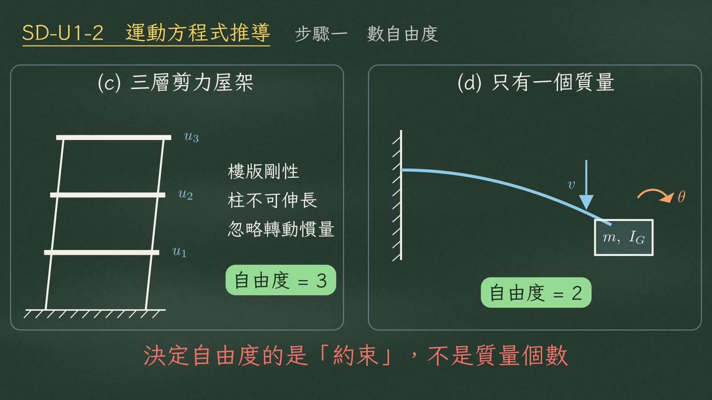
(c) 三層剪力屋架 DOF＝3；(d) 懸臂端 \(m, I_G\) → DOF＝2影片 1:37
| 情況 | 自由度 | 關鍵 |
|---|
| (a) 兩個質量＋剛性連桿 | 1 | 連桿把兩質量綁在一起 |
| (b) 一根剛體桿＋兩彈簧 | 2 | 兩端可不等位移：平移＋轉動 |
| (c) 三層剪力屋架 | 3 | 樓版剛性、柱不可伸長、忽略轉動慣量——三個假設各刪掉一整類自由度 |
| (d) 懸臂端只掛一個質量 | 2 | 題目給了轉動慣量，就多一個轉角 |
結論決定自由度的是約束，不是質量個數。
第 2 章步驟二 選座標
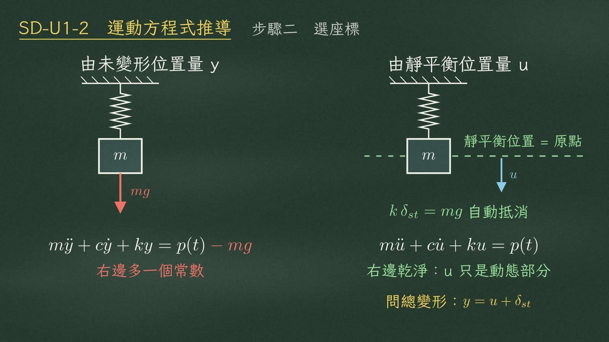
左：由未變形位置量 \(y\)；右：由靜平衡位置量 \(u\)，\(k\delta_{st}=mg\) 自動抵消影片 2:03
從未變形位置量位移，方程式右邊會多一個常數 \(mg\)：
$$m\ddot y+c\dot y+ky=p(t)\color{#c0392b}{-mg}$$
改從靜平衡位置量，因為 \(k\) 乘靜態變位剛好等於 \(mg\)（\(k\delta_{st}=mg\)），重力自動抵消，右邊只剩真正的外力：
$$m\ddot u+c\dot u+ku=p(t)$$
代價\(u\) 只代表動態部分，問總變形要把靜態變位加回去：\(y=u+\delta_{st}\)。
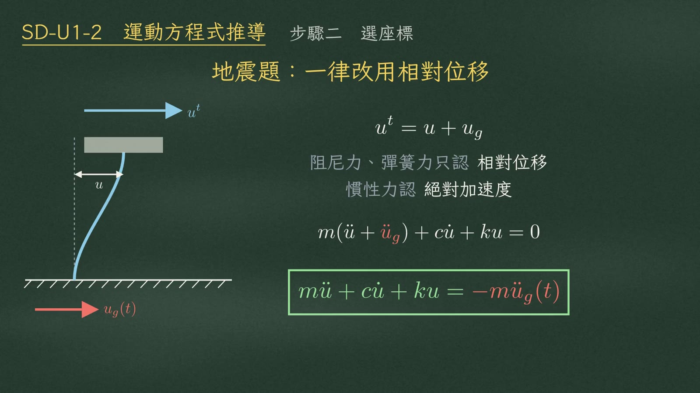
地震題：\(u^t=u+u_g\)，推得標準形式影片 2:30
地震題一律改用相對位移 \(u\)，等於絕對位移減地表位移。阻尼力和彈簧力只認相對位移，慣性力認的是絕對加速度。
$$u^t=u+u_g\qquad m(\ddot u+\ddot u_g)+c\dot u+ku=0$$
把絕對加速度拆成相對加地表，多出來的那一項搬到右邊，就得到標準形式：
$$m\ddot u+c\dot u+ku=-m\ddot u_g(t)$$
第 3 章路線一 牛頓法・例題二
路線一，向量法，也就是牛頓第二定律加達朗貝爾原理。位移向右為正，彈簧力、阻尼力、慣性力三個抵抗力全部指向左，只有外力向右。所以標準方程式左邊三項永遠都是正號。
注意慣性力是虛擬力，方向和加速度相反。
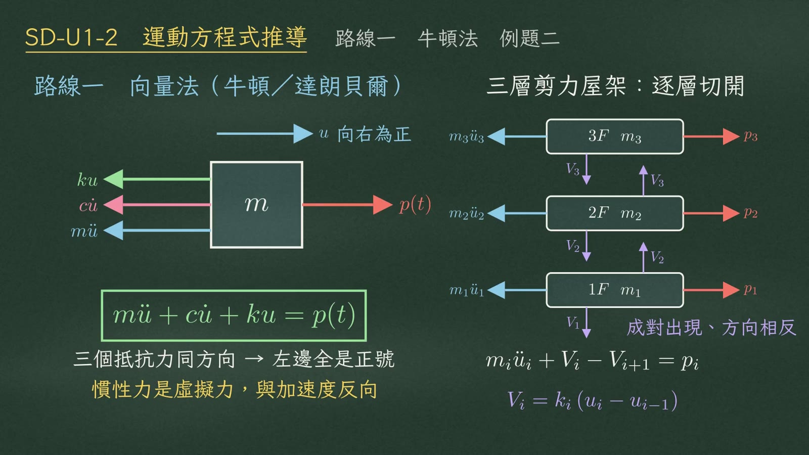
左：單質量自由體圖；右：三層剪力屋架逐層切開，柱剪力 \(V\) 成對出現、方向相反影片 3:18
三層剪力屋架逐層切開，每層樓版一個自由體。同一層的柱剪力在上下兩個自由體成對出現，方向相反。每層的式子是：質量乘加速度，加下層剪力，減上層剪力，等於外力。層剪力等於層間勁度乘層間相對位移。
$$m_i\ddot u_i+V_i-V_{i+1}=p_i\qquad V_i=k_i\,(u_i-u_{i-1})$$
例題二 三層剪力屋架
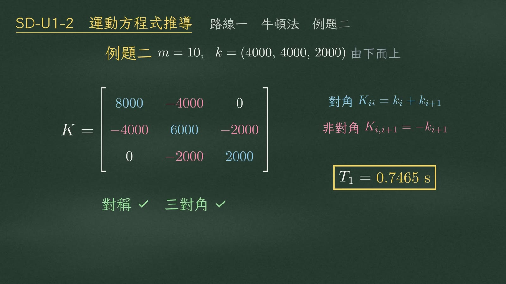
\(m=10\)，\(k=(4000,4000,2000)\) 由下而上；\(K\) 矩陣逐格寫出影片 3:54
每層質量 10，層間勁度由下而上 4000、4000、2000。代進去：
$$K=\begin{bmatrix}8000&-4000&0\\-4000&6000&-2000\\0&-2000&2000\end{bmatrix}$$
| 位置 | 規則 |
|---|
| 對角項 | 上下兩層相加：\(K_{ii}=k_i+k_{i+1}\) |
| 非對角項 | 上層取負：\(K_{i,i+1}=-k_{i+1}\) |
檢查對稱 ✓ 三對角 ✓ 基本週期 \(T_1=0.7465\ \text{s}\)
第 4 章路線二 Lagrange
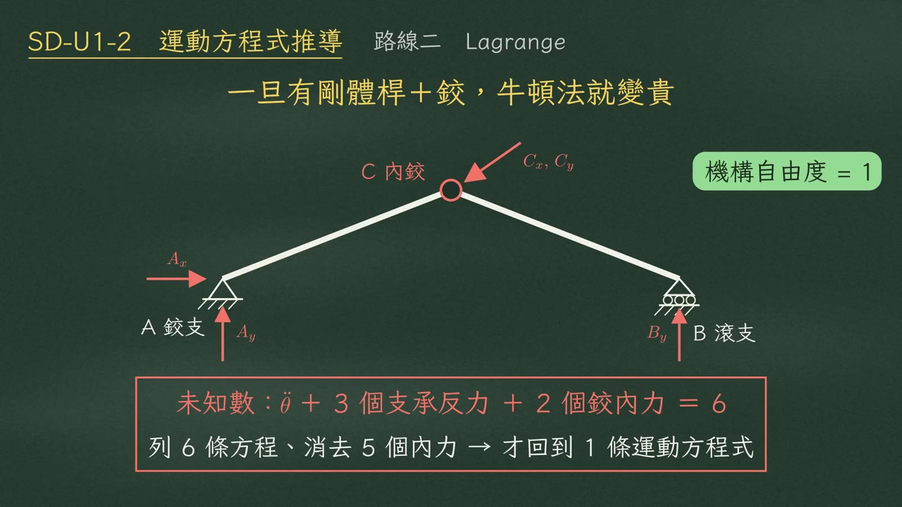
A 鉸支、C 內鉸、B 滾支：機構自由度＝1，牛頓法卻有 6 個未知數影片 4:22
可是一旦出現剛體桿和鉸，牛頓法就變貴。看這個機構：左端鉸支、中間內鉸、右端滾支，自由度只有一。牛頓法要拆成兩根桿，未知數是轉角加速度、三個支承反力、兩個鉸內力，總共六個；列六條方程，消掉五個內力，才回到一條運動方程式。
$$\text{未知數}:\ \ddot\theta+3\ (\text{支承反力})+2\ (\text{鉸內力})=6$$
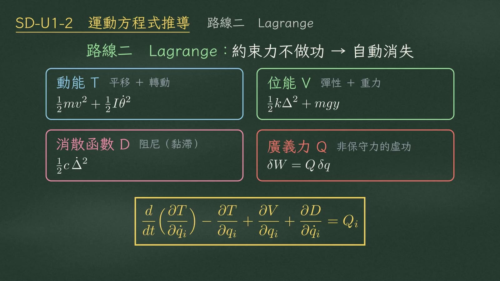
四格：動能 T、位能 V、消散函數 D、廣義力 Q；下方 Lagrange 標準式影片 4:55
路線二，純量法，Lagrange 方程。約束力在自己的方向上位移恆為零，不做功，所以在能量式裡根本不出現。你只要寫四個純量：
| 純量 | 內容 | 黑板寫法 |
|---|
| 動能 \(T\) | 平移＋轉動 | \(\tfrac12 mv^2+\tfrac12 I\dot\theta^2\) |
| 位能 \(V\) | 彈性＋重力 | \(\tfrac12 k\Delta^2+mgy\) |
| 消散函數 \(D\) | 阻尼（黏滯） | \(\tfrac12 c\dot\Delta^2\) |
| 廣義力 \(Q\) | 用虛功求（非保守力） | \(\delta W=Q\,\delta q\) |
四個寫完，剩下的只是微分：
$$\frac{d}{dt}\!\left(\frac{\partial T}{\partial\dot q_i}\right)-\frac{\partial T}{\partial q_i}+\frac{\partial V}{\partial q_i}+\frac{\partial D}{\partial\dot q_i}=Q_i$$
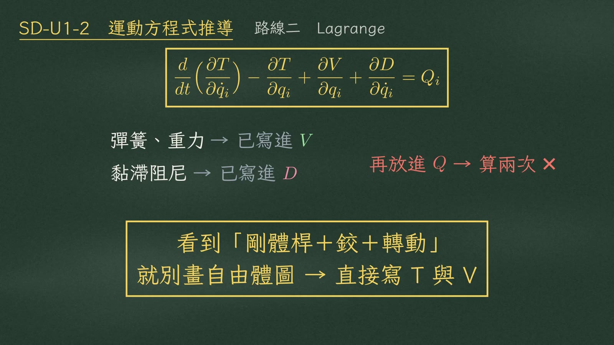
彈簧、重力已寫進 V；黏滯阻尼已寫進 D → 再放進 Q 就算兩次影片 5:18
高頻失分點彈簧和重力已經寫進位能，黏滯阻尼已經寫進消散函數，都不可以再放進廣義力，否則會算兩次。
口訣看到剛體桿、鉸、轉動，就別畫自由體圖了，直接寫 \(T\) 和 \(V\)。
第 5 章例題一 剛性桿
均質剛性桿長 4 m、質量 400 kg，A 端鉸支，右端掛 300 kg；彈簧 8000 N/m 裝在距 A 3 m，阻尼 800 裝在距 A 2 m。
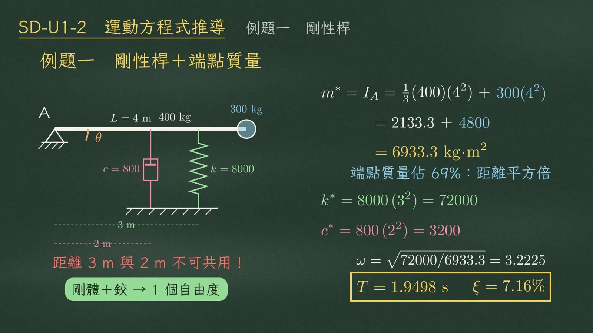
剛體＋鉸 → 1 個自由度；\(m^*\)、\(k^*\)、\(c^*\) 與週期、阻尼比影片 6:27
剛體加鉸，一個自由度，取轉角 \(\theta\)。廣義質量就是對 A 的轉動慣量：桿身 \(\tfrac13 mL^2\)，2133.3；端點 300 乘 4 平方，4800，合計 6933.3。
$$m^*=I_A=\tfrac13(400)(4^2)+300(4^2)=2133.3+4800=6933.3\ \text{kg}\cdot\text{m}^2$$
端點質量佔了六成九（69%），因為離轉軸最遠，貢獻是距離平方倍。
$$k^*=8000\,(3^2)=72000\qquad c^*=800\,(2^2)=3200$$
陷阱彈簧和阻尼距離不同（3 m 與 2 m），千萬不要共用。
$$\omega=\sqrt{72000/6933.3}=3.2225\qquad T=1.9498\ \text{s}\qquad \xi=7.16\%$$
第 6 章重力要展開到二階
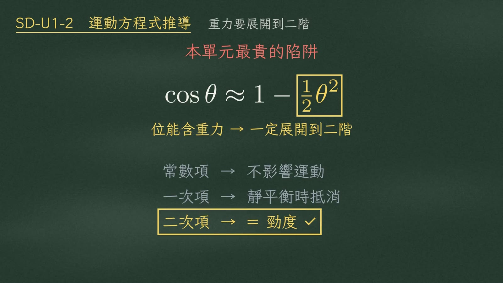
本單元最貴的陷阱：\(\cos\theta\approx1-\tfrac12\theta^2\)影片 6:53
本單元最貴的陷阱位能含重力時，\(\cos\theta\) 一定要展開到二階：\(\cos\theta\approx1-\tfrac12\theta^2\)。
為什麼？勁度來自位能的二次項。
| 位能中的項 | 作用 |
|---|
| 常數項 | 不影響運動 |
| 一次項 | 靜平衡時抵消 |
| 二次項（\(\theta^2\) 的係數） | ＝ 勁度，真正決定振動快慢 |
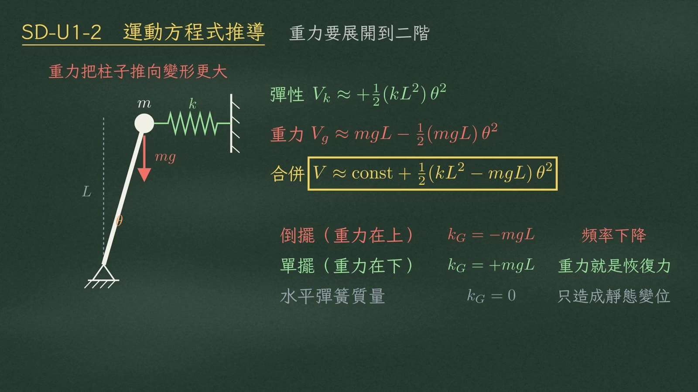
倒擺：彈性位能＋重力位能合併；下方三種情況的 \(k_G\)影片 7:33
看倒擺：剛性柱、頂端質量、側向彈簧。彈性位能給正的 \(\tfrac12 kL^2\theta^2\)；重力位能展開後，多一個負的 \(\tfrac12 mgL\,\theta^2\)。
$$V_k\approx+\tfrac12(kL^2)\,\theta^2\qquad V_g\approx mgL-\tfrac12(mgL)\,\theta^2$$
$$V\approx\text{const}+\tfrac12\,(kL^2-mgL)\,\theta^2$$
合併，有效勁度等於 \(kL^2-mgL\)。重力把柱子推向變形更大的方向，是負的幾何勁度。
| 系統 | 幾何勁度 | 說明 |
|---|
| 倒擺（重力在上） | \(k_G=-mgL\) | 頻率下降 |
| 單擺（重力在下） | \(k_G=+mgL\) | 重力就是恢復力 |
| 水平彈簧質量 | \(k_G=0\) | 重力只造成靜態變位 |
第 7 章例題三 倒擺負勁度
頂端質量 2000 kg，柱高 3 m，彈簧 12000 N/m。
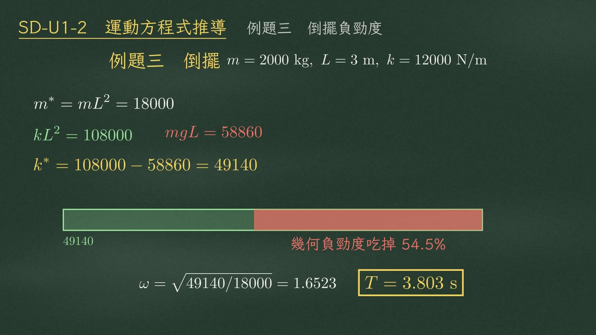
\(k^*=108000-58860=49140\)：幾何負勁度吃掉 54.5%影片 8:06
$$m^*=mL^2=18000\qquad kL^2=108000\qquad mgL=58860$$
$$k^*=108000-58860=49140$$
有效勁度只剩 49140，幾何負勁度吃掉五成四以上。
$$\omega=\sqrt{49140/18000}=1.6523\qquad T=3.803\ \text{s}$$
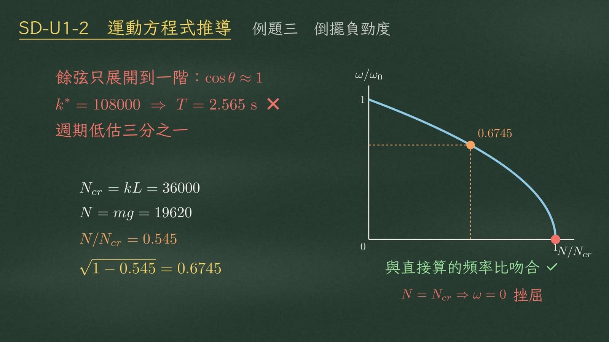
左：只展開一階的錯誤；右：\(\omega/\omega_0\) 對 \(N/N_{cr}\) 曲線影片 8:43
常見錯誤如果 \(\cos\theta\) 只展開到一階（\(\cos\theta\approx1\)），重力項變成常數，整個消失：\(k^*=108000\Rightarrow T=2.565\ \text{s}\)，週期低估了三分之一。
用軸力檢查
臨界軸力 \(N_{cr}=kL=36000\)，自重 \(N=mg=19620\)，比值 \(N/N_{cr}=0.545\)，
\(\sqrt{1-0.545}=0.6745\)，和頻率比完全吻合 ✓。
自重加到 36000，\(\omega\) 歸零，就是挫屈：\(N=N_{cr}\Rightarrow\omega=0\)。
第 8 章路線三 廣義單自由度
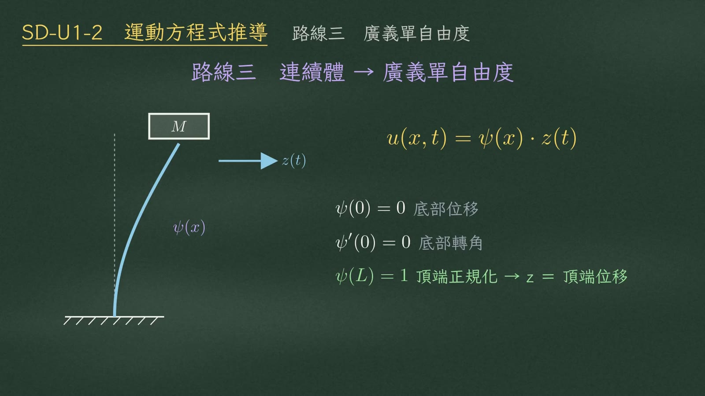
\(u(x,t)=\psi(x)\cdot z(t)\) 與三個邊界條件影片 9:06
路線三，連續體簡化。懸臂柱有無限多個自由度，假設位移等於形狀 \(\psi\) 乘時間函數 \(z\)，就壓成一個。
$$u(x,t)=\psi(x)\cdot z(t)$$
\(\psi\) 要滿足位移邊界條件：底部位移零 \(\psi(0)=0\)、轉角零 \(\psi'(0)=0\)，頂端正規化為一 \(\psi(L)=1\)，\(z\) 就直接是頂端位移。
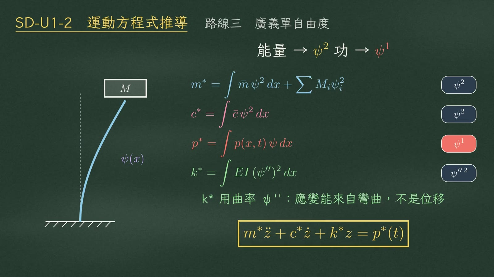
能量 → \(\psi^2\)、功 → \(\psi^1\)；\(k^*\) 用曲率 \(\psi''\)影片 9:40
口訣凡是能量，\(\psi\) 帶平方；凡是功，\(\psi\) 只帶一次方。
$$m^*=\int\bar m\,\psi^2\,dx+\sum M_i\psi_i^2\qquad c^*=\int\bar c\,\psi^2\,dx$$
$$p^*=\int p(x,t)\,\psi\,dx\qquad k^*=\int EI\,(\psi'')^2\,dx$$
$$m^*\ddot z+c^*\dot z+k^*z=p^*(t)$$
\(m^*\) 是 \(m\) 乘 \(\psi\) 平方積分，再加集中質量；\(c^*\) 同理；\(p^*\) 是外力乘 \(\psi\)，一次方。\(k^*\) 用的是 \(\psi\) 的二次微分，也就是曲率的平方，因為應變能來自彎曲，不是來自位移。
第 9 章例題四 橋墩
橋墩高 10 m，\(EI=1.2\times10^9\)，墩身每公尺 2400 kg，上部結構 120 t。
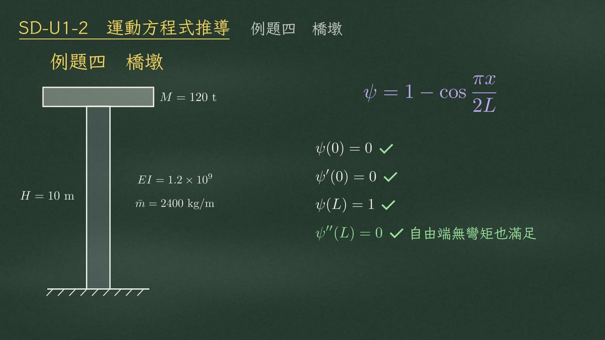
\(\psi=1-\cos\dfrac{\pi x}{2L}\)：四個條件全部滿足影片 10:07
$$\psi=1-\cos\frac{\pi x}{2L}$$
底部位移和轉角都是零，頂端 \(\psi(L)=1\)；頂端二次微分 \(\psi''(L)=0\) 也成立，連自由端無彎矩都滿足。
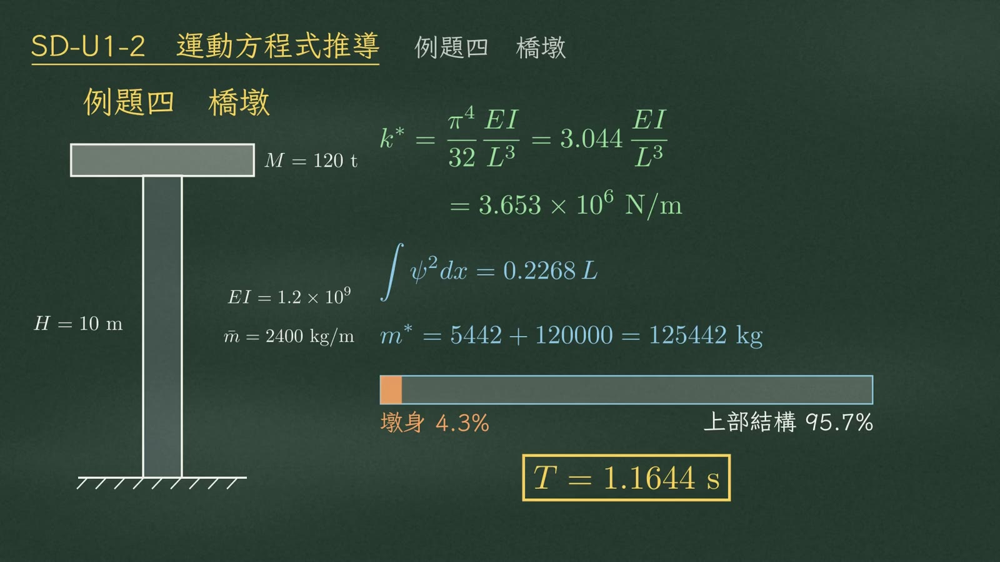
\(k^*\)、\(m^*\) 與週期；墩身只佔 4.3%影片 10:44
$$k^*=\frac{\pi^4}{32}\frac{EI}{L^3}=3.044\,\frac{EI}{L^3}=3.653\times10^6\ \text{N/m}$$
$$\int\psi^2\,dx=0.2268\,L\qquad m^*=5442+120000=125442\ \text{kg}$$
墩身只貢獻 5442 kg，加上部 120000，墩身只佔四個百分點多（4.3%）。
週期 \(T=1.1644\ \text{s}\)
第 10 章Rayleigh 恆為上界
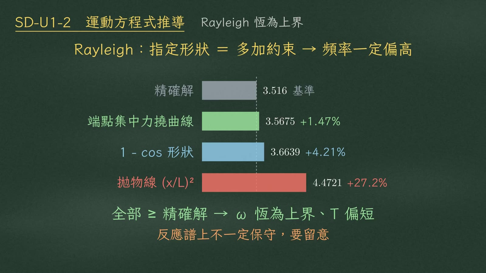
等斷面懸臂柱：三種假設形狀的頻率係數皆 ≥ 精確解影片 11:21
Rayleigh 法算出來的頻率一定偏高。指定形狀，等於禁止其他形狀，加了無限多個約束，結構變硬。
| 形狀 | 頻率係數 | 誤差 |
|---|
| 精確解 | 3.516 | 基準 |
| 端點集中力撓曲線 | 3.5675 | ＋1.47% |
| \(1-\cos\) 形狀 | 3.6639 | ＋4.21% |
| 拋物線 \((x/L)^2\) | 4.4721 | ＋27.2% |
要留意全部 ≥ 精確解 → \(\omega\) 恆為上界、週期因此偏短；在反應譜上不一定保守。
第 11 章步驟四 矩陣用讀的
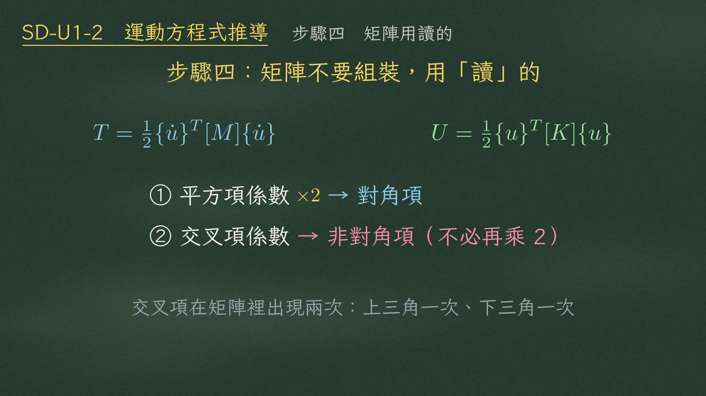
二次式係數與矩陣元素一一對應：兩條規則影片 11:47
步驟四，整理成矩陣，不要組裝，用讀的。動能和應變能都是二次式，係數和矩陣元素一一對應。
$$T=\tfrac12\{\dot u\}^T[M]\{\dot u\}\qquad U=\tfrac12\{u\}^T[K]\{u\}$$
規則兩句話① 平方項係數 ×2 → 對角項
② 交叉項係數 → 非對角項（不必再乘 2）
因為交叉項在矩陣裡本來就出現兩次：上三角一次，下三角一次。
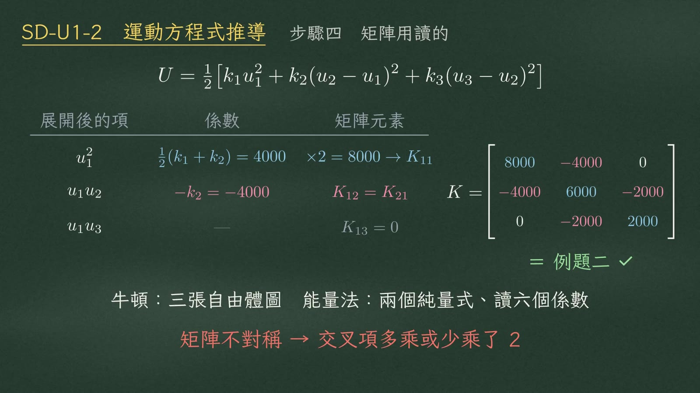
展開應變能逐項讀係數，得到與例題二相同的 \(K\)影片 12:21
用例題二的屋架驗證。展開應變能：
$$U=\tfrac12\left[k_1u_1^2+k_2(u_2-u_1)^2+k_3(u_3-u_2)^2\right]$$
| 展開後的項 | 係數 | 矩陣元素 |
|---|
| \(u_1^2\) | \(\tfrac12(k_1+k_2)=4000\) | ×2 ＝ 8000 → \(K_{11}\) |
| \(u_1u_2\) | \(-k_2=-4000\) | 直接就是 \(K_{12}=K_{21}\) |
| \(u_1u_3\) | —（沒有這一項） | \(K_{13}=0\) |
結果和牛頓法一模一樣 ✓。牛頓法要三張自由體圖；能量法只寫兩個純量式、讀六個係數。
除錯矩陣不對稱，一定是交叉項多乘或少乘了 2。
第 12 章耦合是座標的結果
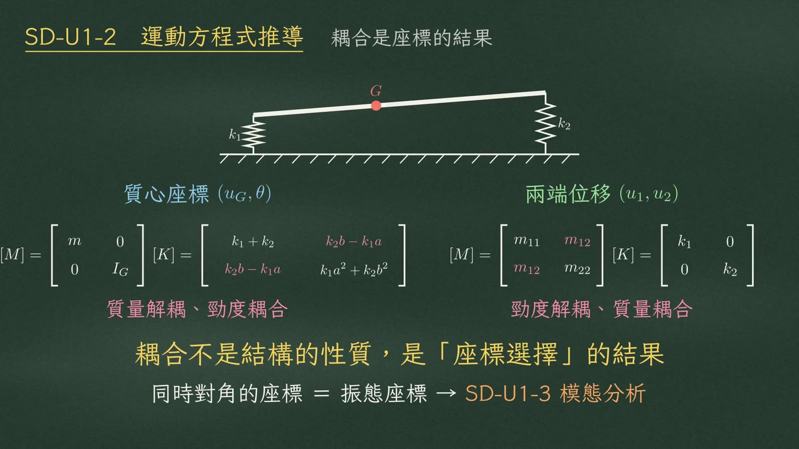
同一根剛性桿：質心座標 vs. 兩端位移座標影片 12:51
同一根剛性桿架在兩個彈簧上。
| 座標 | \([M]\) | \([K]\) | 結果 |
|---|
| 質心平移＋轉角 \((u_G,\theta)\) | 對角 | 有交叉項 | 質量解耦、勁度耦合 |
| 兩端位移 \((u_1,u_2)\) | 耦合 | 對角 | 勁度解耦、質量耦合 |
重點耦合不是結構的性質，是座標選擇的結果。能讓兩個矩陣同時對角的座標，叫振態座標，就是下一單元（SD-U1-3 模態分析）的主題。
第 13 章總結 四道防呆
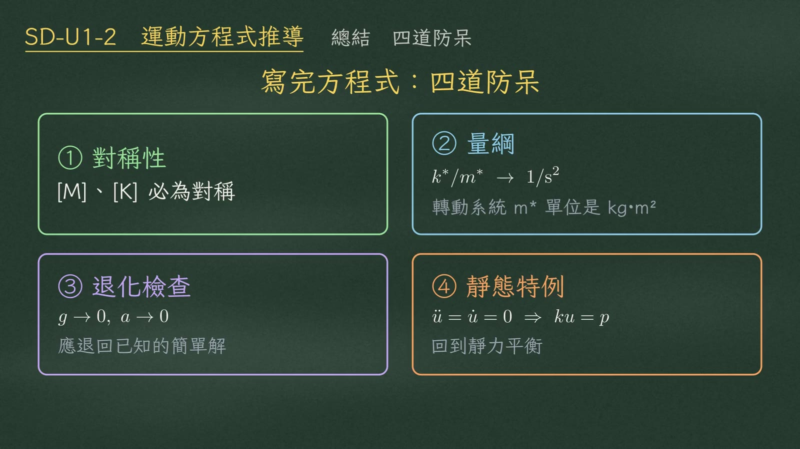
寫完方程式：四道防呆影片 13:28
寫完方程式，四道防呆一定要做。
| 防呆 | 檢查內容 |
|---|
| ① 對稱性 | 質量和勁度矩陣 \([M]\)、\([K]\) 必須對稱 |
| ② 量綱 | \(k^*/m^*\) 要是 \(1/\text{s}^2\)；轉動系統的 \(m^*\) 單位是 \(\text{kg}\cdot\text{m}^2\) |
| ③ 退化檢查 | 令 \(g\) 或某個距離趨近零（\(g\to0,\ a\to0\)），應退回已知的簡單解 |
| ④ 靜態特例 | 加速度和速度設為零（\(\ddot u=\dot u=0\)），應回到 \(ku=p\) |
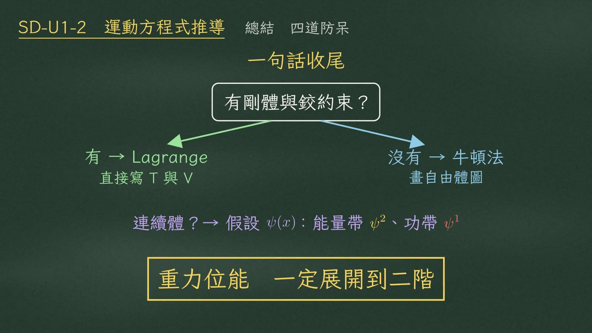
一句話收尾：選路線的決策樹影片 13:58
最後收成一句話。看到題目先問：
| 問題 | 答案 | 做法 |
|---|
| 有沒有剛體與鉸約束？ | 有 | 直接寫 \(T\) 與 \(V\)，套 Lagrange |
| 沒有 | 畫自由體圖用牛頓法 |
| 連續體？ | 要化成單自由度 | 假設 \(\psi\)：能量帶 \(\psi^2\)、功帶 \(\psi^1\) |
最後一句重力位能，一定展開到二階。